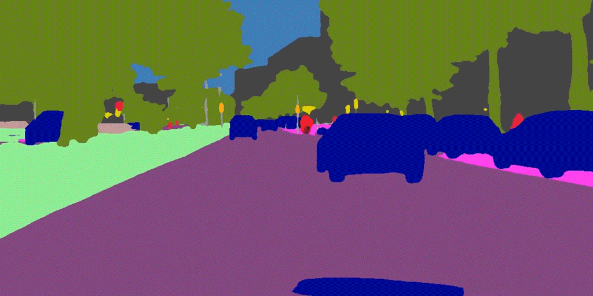
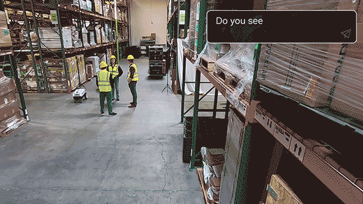

Spatiotemporal Intelligence
We model how complex environments evolve over time and space, with an emphasis on forecasting and generalization.
- Video and sequence prediction
- Weather and satellite intelligence
- Urban dynamics and time-series modeling

Vision & Multimodal AI
We study visual and multimodal understanding that can remain useful across changing tasks, domains, and observations.
- Computer vision and video understanding
- Vision-language models and multimodal reasoning
- Domain adaptation and generalization

AI for Social Good
We connect methodological AI advances to societal challenges where reliable prediction and understanding can create public value.
- Climate, weather, and disaster-related AI
- Urban context modeling and public safety
- Human-centered intelligent systems

Physical & Embodied AI
We explore intelligent systems that perceive and reason about human, industrial, and robot-centered physical environments.
- Environment-aware prediction
- Industrial anomaly understanding
- Robot and human-centered perception